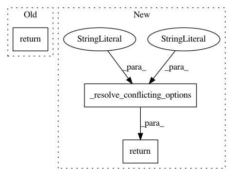

c8f0abdcf2263f9e71261e68c5f24dd97f272332,contrib/scrooge/src/python/pants/contrib/scrooge/tasks/thrift_linter_task.py,ThriftLinterTask,_is_strict,#ThriftLinterTask#Any#,81
Before Change
self.raise_conflicting_option("strict_default")
if task_strict_configured:
return self._to_bool(task_options.strict_default)
return self._to_bool(subsystem_options.strict_default)
def _lint(self, target, classpath):
self.context.log.debug(f"Linting {target.address.spec}")
After Change
if target.thrift_linter_strict is not None:
return self._to_bool(target.thrift_linter_strict)
return self._to_bool(
self._resolve_conflicting_options(old_option="strict_default", new_option="strict_default"),
)
def _lint(self, target, classpath):
self.context.log.debug(f"Linting {target.address.spec}")
In pattern: SUPERPATTERN
Frequency: 3
Non-data size: 3
Instances
Project Name: pantsbuild/pants
Commit Name: c8f0abdcf2263f9e71261e68c5f24dd97f272332
Time: 2020-01-06
Author: ericarellano@me.com
File Name: contrib/scrooge/src/python/pants/contrib/scrooge/tasks/thrift_linter_task.py
Class Name: ThriftLinterTask
Method Name: _is_strict
Project Name: pantsbuild/pants
Commit Name: c8f0abdcf2263f9e71261e68c5f24dd97f272332
Time: 2020-01-06
Author: ericarellano@me.com
File Name: src/python/pants/backend/jvm/tasks/checkstyle.py
Class Name: Checkstyle
Method Name: skip_execution
Project Name: pantsbuild/pants
Commit Name: c8f0abdcf2263f9e71261e68c5f24dd97f272332
Time: 2020-01-06
Author: ericarellano@me.com
File Name: contrib/scrooge/src/python/pants/contrib/scrooge/tasks/thrift_linter_task.py
Class Name: ThriftLinterTask
Method Name: skip_execution